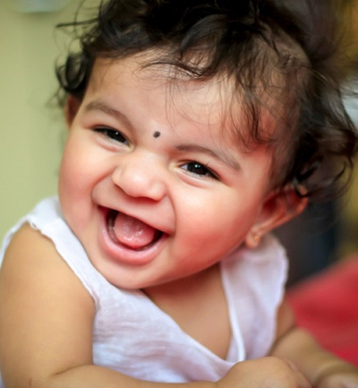
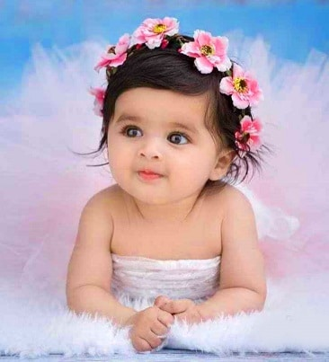

Grahas Photography
Welcome!
click here
Photography is the art, application, and practice of creating durable images by recording light, either electronically by means of an image sensor, or chemically by means of a light-sensitive material such as photographic film.
It is employed in many fields of science, manufacturing (e.g., photolithography), and business, as well as its more direct uses for art, film and video production, recreational purposes, hobby, and mass communication
Nature
 Nature photography is a wide range of photography taken outdoors and devoted to displaying natural elements such as landscapes, wildlife, plants, and close-ups of natural scenes and textures.Nature photography tends to put a stronger emphasis on the aesthetic value.
Nature photography is a wide range of photography taken outdoors and devoted to displaying natural elements such as landscapes, wildlife, plants, and close-ups of natural scenes and textures.Nature photography tends to put a stronger emphasis on the aesthetic value.
Shortly about me
photographers specialize in one or two different types of photography experimenting with various photography styles can help to expand your skill set.
>Architectural
>Editorial
>Fashion
>Editorial
>Fashion
>Fine Art
>Photojournalism
>Portrait
>Photojournalism
>Portrait
Latest Photoshoot


© Copyright.